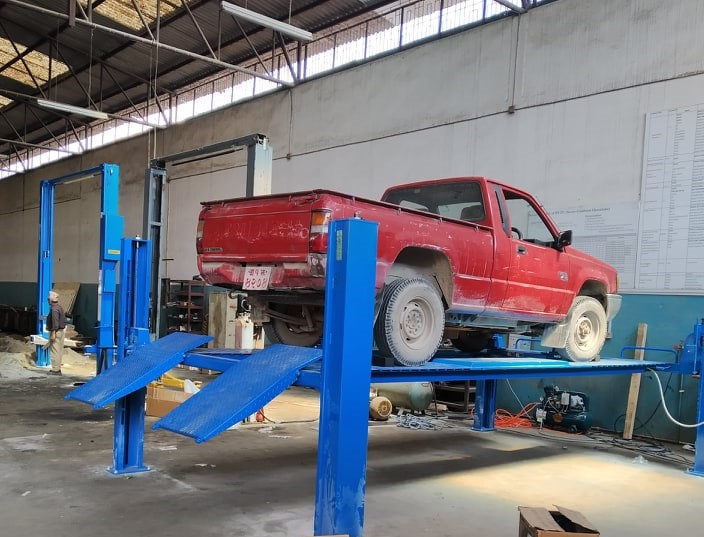

As an aspiring mechanical engineer, I was eager to gain hands-on experience and supplement my theoretical knowledge with practical skills. That's why I jumped at the opportunity to do a three-month internship at a workshop run by HED, a leading provider of engineering solutions in the automotive industry. During my internship, I had the chance to work alongside experienced mechanics, learn new techniques, and gain insight into the workings of a busy vehicle maintenance center. In this blog post, I will share my reflections on my learning experience, challenges I faced, and recommendations for future interns.
April 10, 2023
One of the highlights of my internship was the wide range of tasks I was able to perform. From basic car servicing, such as changing oil filters and brake pads, to more complex engine repairs, I had the opportunity to work on a variety of vehicles and gain practical skills. I also had the chance to use specialized equipment such as the X431 PRO Car Scanner, which was a valuable learning experience. Additionally, I gained insight into the role of different personnel within the workshop, including the head mechanics of the light and heavy vehicle departments, the plant store manager, and the chief of the office.
Of course, no internship is without its challenges. One of the main difficulties I faced was the language barrier, as some of the mechanics spoke a different language than I did. This made it challenging to communicate effectively and understand technical instructions. Additionally, there were times when certain vehicles required technical information that was not readily available, which posed a challenge in carrying out repairs. Lastly, there were occasions where equipment availability was limited, which required us to be creative and find alternative solutions to complete the task at hand.
Based on my experience, I would recommend that future interns come prepared with some basic knowledge of the industry and technical terms in the relevant language, which can help bridge the communication gap. Additionally, it's important to be flexible and adaptable, as equipment availability can be unpredictable, and alternative solutions may need to be found. Lastly, I would advise interns to take advantage of the opportunity to network with the workshop staff and learn from their experiences, as this can be invaluable in shaping your career path.
Overall, my HED internship was a valuable learning experience that allowed me to gain practical skills, observe industry practices, and develop valuable contacts within the field. Through perseverance and the guidance of the workshop staff, I was able to overcome challenges and develop new skills. I would highly recommend this internship to anyone interested in pursuing a career in the automotive industry, and I'm grateful for the opportunity to have been a part of it.